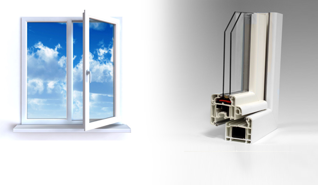
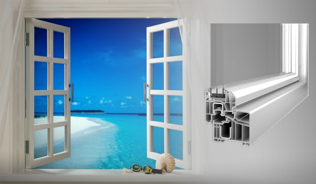
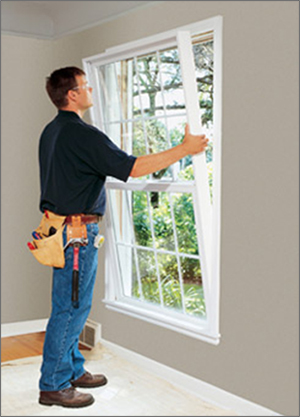

Čo ponúkame?
Slovenský výrobca plastových okien a dverí s viac než 10-ročnou tradíciou. Komplexné služby od výroby cez montáž až po servis.
Slovenský výrobok
Doprava zdarma
Servis
Poradenstvo
Montáž a demontáž
Doprava zdarma
Servis
Poradenstvo
Montáž a demontáž
Výmena plastových okien a dverí
Výmena okien a dverí sa skladá z troch krokov :
- demontáž starého okna
- montáž nového okna, vnútorných a vonkajších parapiet
- murárske vysprávky ostenia
Hoci výmena okien spočíva v troch základných krokoch, iba zákazník rozhoduje, či má záujem o kompletný rozsah prác. Odporúčame však zákazníkom, aby montáž nových okien zverili do rúk profesionálnym montážnikom firmy Klačanský, nakoľko je potrebné dodržať technologický postup montáže, hlavne dobré ukotvenie nového okna do múru, ktorým sa zabezpečí prenos síl do muriva a dôkladné utesnenie vznikunutých medzier medzi rámom okna a stenou polyuretánovou penou. Iba okno namontované určeným technologickým postupom zabezpečí jeho funkčnosť a nezatekavosť.
Ako dlho trvá výmena okien? Okná v štvorizbovom byte sú vymenené v priebehu jedného dňa spolu s uchytením vnútorných a vonkajších parapiet. Murárske vysprávky sa vykonávajú na nasledujúci deň, opäť z dôvodu dodržania technologického postupu, ktorým sa zabezpečí, že omietka nebude praskať a opadávať, hlavne z vonkajšej strany. Po dokončení murárskych vysprávok sa namontujú tieniace prvky.

Kontaktujte nás
Adresa:
Ján Klačanský
Malá kamenná 8
949 01 Nitra
Kontakt
0948 535 783
Ján Klačanský
Malá kamenná 8
949 01 Nitra
Kontakt
0948 535 783